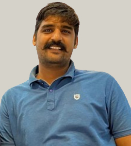
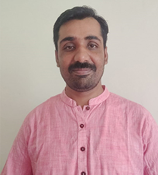

Our Board of Directors brings together experienced professionals committed to creating a caring and dignified future where every elderly person feels valued, respected, and supported.

Mr. Rajendra Singh Rathore is a postgraduate in social work with over 11 years of extensive professional experience in Education, Health, and Panchayati Raj.He has
Dr. Shalini Singh holds a Doctorate degree in Human Development. Her Doctorate research focuses on “Patterns of Attachment to Parents and Peers during Adolescence

Mr. Ravindra Pratap is a postgraduate in social work with over 13 years of extensive professional experience in education, health, and life skill.He has served both national and